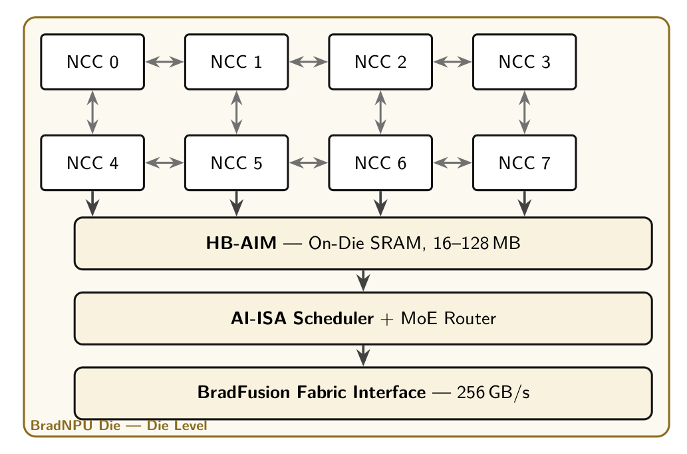

The definitive reference is the BRAD_DEVICES_COMPLETE_SPEC.md compendium — 1,737 lines across the whole ecosystem, written and kept current by me. It consolidates 136 documents and opens today — it is the paper trail everything on this site points to.
The one book. Parts 0–10 + appendices: ecosystem blueprint, CPU, GPU, NPU, memory & storage, OS, compute/software, console & products, company, roadmap — with honest Gen 1 / Gen 2 / Vision tagging and a source-of-truth directory tree.
Every PDF now wears the brand — gold-dark rules, the official wordmark, and register-level diagrams drawn in one shared TikZ style. Download the set:
The GPU architecture — three pipelines drawn as stage diagrams.
The ISA — real bit-field figures for RRR / RI / BR / JMP.
The vector ISA v2 — 16-bit compressed layout + 256-bit VSET lanes.
BradXon Gen 1 platform — address-layout bands, MMIO, ANF fabric governor.
The full product line — brand-hierarchy tree + software portfolio.
Whitespace vs the giants — the software moat line is shipped.
Core-by-core vs the incumbent — benchmark tables, honest rows.

GPU pipeline. The six stages every BradVector core runs — drawn as numbered stage diagrams.

NPU topology. The 2×4 NCC mesh, HB-AIM, scheduler and fabric — §3.2 of the book.

Memory. BradRAM + SPMP — the two-tier unified pool, §4.1 of the book.
Every subsystem has a deep-dive. A selection:
The BradVector instruction set — the ISA every Torox GPU shares.
Torox microarchitecture, die naming and the Torox G1 die registry.
Compute model — kernels, warps, scheduling, shared memory.
The stable host-facing surface: compile → pack → session → launch → run → inspect → breakpoints. One C header, one implementation, exposed 1:1 to the browser via site/js/bradvector.js.
The software platform & strategy — why the toolchain is the moat.
SoC platforms, boards, cooling, memory modules.
Memory die, unified pool, power/security/timing deep-dives.
The operating system across Mobile–Compute editions.
The console — a Torox GPU in a box, with the Nexus controller.
The Python-first AI weapon — import tifa: one-line optimize(), AutoNeuroStream partition (BNV/BVX/BFX), MoE expert spooler, exact FP8/FP4/INT4 digit formats. Stdlib-only, runnable today.
The cloud-service developer surface — REST spec plus stdlib-only reference server: BradID auth, BradMail, BradHub, BradPay ledger, BradCloud, BradNotify, BradGeo.
The reference developer CLI — braddev cvt / run / dbg / gpu info / gpu top / timeline / test built on the real shipped stack (bradc → .bvbc → BVRT → BradTimeline/bradgdb) plus the SPMP/EROE/Fabric drivers. All self-checks pass; saxpy & fib run breathable kernels end-to-end.
The twelve above are a selection. This is the rest: every document in the build tree, its path, its length, and the state it declares. Generated from the tree on every build — there is no hand-typed list here to rot.
Every document in the build tree, with the state it declares — quoted, not graded. A document that declares no state is marked as such; the index does not assign one. Paths are receipts that a file exists there: the documents are not published by being listed, and the shipped PDFs are linked above.
| Document | Path | Declared state | Lines |
|---|---|---|---|
| read me before you touch anything | AGENTS.md | — | 741 |
| Brad Devices Ecosystem — Architecture Diagrams | ARCHITECTURE.md | — | 196 |
| BRAD DEVICES — Complete Unified Specification | BRAD_DEVICES_COMPLETE_SPEC.md | — | 1737 |
| Brad Devices Ecosystem vs Apple Ecosystem | BRAD_VS_APPLE.md | — | 170 |
| the journey, written in first person, every line a receipt | HISTORY.md | — | 952 |
| Brad Devices Ecosystem — Master Index | MASTER_INDEX.md | — | 421 |
| Brad Devices Naming Guide — Consistency Audit | NAMING_GUIDE.md | — | 470 |
| README.md | README.md | — | 57 |
| REPO DIGEST — 2026-11-12 | REPO_DIGEST_2026-11-12.md | RECORD READ COMPLETE | 911 |
| REPO DIGEST — 2026-11-16 | REPO_DIGEST_2026-11-16.md | RECORD READ COMPLETE for the delta (16 Nov 2026). Git state at read time: cle | 1197 |
| Brad Devices — Product Roadmap Timeline | ROADMAP.md | — | 321 |
| the live furnace — what I'm working on, right now | TASKS.md | — | 193 |
| Trademarks and reserved marks | TRADEMARKS.md | — | 27 |
| Brad Devices — Future Vision & Technology Readiness | VISION.md | — | 172 |
| how Brad Devices speaks | VOICE.md | binding | 178 |
| Document | Path | Declared state | Lines |
|---|---|---|---|
| Brad Devices — Architecture of Record | Brad Silicon/ARCHITECTURES.md | DESIGNED | 265 |
| Brad Silicon Strategy — Market Entry & Licensing | Brad Silicon/BRADSILICON_STRATEGY.md | — | 194 |
| BradISA — Architecture Guide | Brad Silicon/BradISA/ARCHITECTURE_GUIDE.md | — | 108 |
| BradISA — Architecture Reference Model (ARM) | Brad Silicon/BradISA/ARCHITECTURE_REFERENCE_MODEL.md | VSTATUS.VE, POWER, etc. | 109 |
| BradISA V2 — ABI and Register File (normative) | Brad Silicon/BradISA/BRADISA_V2_ABI.md | — | 107 |
| BradISA V2 — Encoding Growth Proposal | Brad Silicon/BradISA/BRADISA_V2_ENCODING_PROPOSAL.md | PROPOSAL | 309 |
| BradISA vs RISC-V — The Honest Comparison | Brad Silicon/BradISA/BRADISA_VS_RISCV.md | — | 180 |
| BradISA — Quick Reference Card | Brad Silicon/BradISA/ISA_QUICK_REFERENCE.md | — | 296 |
| Kinetic Microarchitecture | Brad Silicon/BradISA/KINETIC_MICROARCHITECTURE.md | DESIGNED | 308 |
| BradISA — Shipped Reference Toolchain Guide | Brad Silicon/BradISA/TOOLCHAIN_GUIDE.md | — | 181 |
| Brad Toolchain Strategy — Assembler, Compiler, and Ecosystem | Brad Silicon/BradISA/TOOLCHAIN_STRATEGY.md | done | 152 |
| BradChip — Unified SoC Package | Brad Silicon/CPU/BRADCHIP.md | GEN 1 shipping 2026. | 124 |
| EROE — Eco-Render Optimization Engine | Brad Silicon/CPU/EROE.md | GEN 1 shipping 2026. | 51 |
| HyperCore Atlas — API Reference | Brad Silicon/CPU/HYPERCORE_API_REF.md | — | 289 |
| HyperCore Series & Atlas Architecture — Mobile SoC | Brad Silicon/CPU/HYPERCORE_ATLAS.md | GEN 1 Samsung tiered ladder (7LPP→SF4→SF4P→SF4X), shipping 2026. | 252 |
| HyperCore Atlas — Register Map & Programming Model | Brad Silicon/CPU/HYPERCORE_REGMAP.md | — | 244 |
| BME — Brad Media Engine | Brad Silicon/Compute/BME_MEDIA_ENGINE.md | DESIGNED | 247 |
| BradApex — Datacenter AI & HPC Accelerator | Brad Silicon/Compute/BRADAPEX_ACCELERATOR_SPEC.md | GEN 1 design complete · [Gen2] production ramp 2027–2028 at Samsung SF4X (4 | 237 |
| Brad Compute Architecture — Unified Graphics & Accelerator Spec | Brad Silicon/Compute/BRAD_COMPUTE_ARCHITECTURE.md | — | 311 |
| Torox Compiler Plan | Brad Silicon/Compute/TOROX_COMPILER_PLAN.md | PLAN | 440 |
| Torox Microarchitecture | Brad Silicon/Compute/TOROX_MICROARCHITECTURE.md | DESIGNED | 485 |
| BradSense-Render — Software Reference Upscaler (implementation plan) | Brad Silicon/GPU/BRADSENSE_RENDERER_PLAN.md | M0–M2 shipped, M3–M4 planned — every shipped claim has a receipt in | 199 |
| BradSense-Render — Neural Rendering Architecture | Brad Silicon/GPU/BRADSENSE_RENDER_SPEC.md | GEN 1 technology — shipping in all BradGfx and BradFx GPUs. | 279 |
| BradGfx & BradFx — Graphics Architecture Specification | Brad Silicon/GPU/GPU_ARCH.md | — | 311 |
| Brad GPU — Compute Pipeline & Shader Architecture | Brad Silicon/GPU/GPU_COMPUTE.md | GEN 1 shipping 2026. | 331 |
| Brad GPU — Driver Programming Guide | Brad Silicon/GPU/GPU_DRIVER.md | GEN 1 shipping 2026. | 282 |
| BradVector ISA — Instruction Set Architecture | Brad Silicon/GPU/GPU_ISA.md | GEN 1 shipping 2026. | 303 |
| Brad GPU — Memory Model & Cache Hierarchy | Brad Silicon/GPU/GPU_MEMORY.md | GEN 1 shipping 2026. | 281 |
| BradGfx & BradFx — Register Map & Programming Model | Brad Silicon/GPU/GPU_REGMAP.md | GEN 1 shipping 2026. | 264 |
| BradRAM DDS — Dynamic Data-Sensing Architecture | Brad Silicon/Memory/BRADRAM_DDS.md | GEN 1 shipping 2026. | 234 |
| BradRAM — Power Management & Refresh Architecture | Brad Silicon/Memory/BRADRAM_POWER.md | GEN 1 shipping 2026. | 191 |
| BradRAM — RAS, ECC & Reliability | Brad Silicon/Memory/BRADRAM_RAS.md | GEN 1 shipping 2026. | 220 |
| BradRAM & SPMP — Register Map & Programming Model | Brad Silicon/Memory/BRADRAM_REGMAP.md | GEN 1 shipping 2026. | 242 |
| BradRAM & SPMP — Complete Memory Architecture | Brad Silicon/Memory/BRADRAM_SPMP_ARCH.md | GEN 1 shipping 2026. | 174 |
| BradRAM — DRAM Timing Specification | Brad Silicon/Memory/BRADRAM_TIMING.md | GEN 1 industry 12nm-class DRAM process. | 187 |
| Brad Memory — Virtual Memory & Address Translation | Brad Silicon/Memory/BRADRAM_VMEM.md | RECORD SUPERSEDED by `BRADABI | 232 |
| MVRAM Memory Research | Brad Silicon/Memory/MVRAM_RESEARCH.md | SPLIT — MVRAM findings VALID and in the spec; LPGDDR CLOSED, not pursu | 202 |
| BradNPU — Neural Processing Unit Architecture | Brad Silicon/NPU/BRADNPU_ARCH.md | GEN 1 shipping 2026. | 181 |
| Brad Devices Data Pipeline — Architectural Specification | Brad Silicon/PIPELINE_SPEC.md | — | 263 |
| Brad Devices — Platform & Motherboard Architecture (BradBoard) | Brad Silicon/PLATFORM_SPEC.md | — | 311 |
| BradBoard — Platform Architecture Deep-Dive | Brad Silicon/Platform/BRADBOARD_DEEP_DIVE.md | GEN 1 shipping 2026. | 638 |
| Brad Silicon — Silicon Division | Brad Silicon/README.md | — | 18 |
| Document | Path | Declared state | Lines |
|---|---|---|---|
| Brad Mobile Services (BMS) — Complete Architecture | Brad Software/OS/BMS_SPEC.md | Vision | 670 |
| BradABI — the shared memory model | Brad Software/OS/BRADABI.md | PROPOSAL PROPOSED | 197 |
| Brad-CVT & Driver Suite | Brad Software/OS/BRADCVT_DRIVERS.md | GEN 1 shipping 2026. | 226 |
| Brad-CVT — Next Rungs (v1 and beyond) | Brad Software/OS/BRADCVT_NEXT_RUNGS.md | SHIPPED SHIPPED — subset-doc update `42e6847`, implementation | 125 |
| Brad-CVT PTX Subset — v0 | Brad Software/OS/BRADCVT_PTX_SUBSET.md | IMPLEMENTED (v0 + Rung 1: 64-bit ld/st). This document describes the | 417 |
| BradKernel — the charter | Brad Software/OS/BRADKERNEL.md | DESIGNED DESIGNED. The specification exists and is owned | 331 |
| BradKernel ABI — the normative contracts | Brad Software/OS/BRADKERNEL_ABI.md | DESIGNED DESIGNED. Normative for the kernel, and for every driver, runtime, | 700 |
| BradKernel — Blocked Items Register | Brad Software/OS/BRADKERNEL_BLOCKED.md | — | 73 |
| BradKernel coherence — the interface register | Brad Software/OS/BRADKERNEL_COHERENCE.md | DESIGNED DESIGNED. This is the register of every interface the kernel | 606 |
| BradKernel — the plan | Brad Software/OS/BRADKERNEL_PLAN.md | DESIGNED | 422 |
| BradKernel — The Seed: Design Notes | Brad Software/OS/BRADKERNEL_SEED.md | — | 123 |
| BradKernel — Trap-Entry Sequence Specification | Brad Software/OS/BRADKERNEL_TRAP_ENTRY.md | — | 97 |
| BradOS & Brad Mobile Services — Complete Software Stack | Brad Software/OS/BRADOS_COMPLETE.md | GEN 1 shipping 2026. | 237 |
| BradOS Software Strategy — Build, Borrow & the Honest Sequence | Brad Software/OS/BRADOS_KERNEL_STRATEGY.md | done | 167 |
| BradVector Platform — The Complete Reference | Brad Software/OS/BRADVECTOR_PLATFORM.md | `[Gen1]` design intent for silicon; the reference software | 851 |
| BradVector Platform — The Software Moat | Brad Software/OS/BRADVECTOR_PLATFORM_MOAT.md | Status | 295 |
| AeroFlux — Material Engine | Brad Software/OS/BradUI/AEROFLUX_MATERIAL.md | — | 246 |
| Bradium — Foundations & Design Token Architecture | Brad Software/OS/BradUI/BRADIUM_FOUNDATIONS.md | — | 906 |
| BradOS Look — The Design Language | Brad Software/OS/BradUI/BRADOS_LOOK.md | — | 493 |
| BradUI Compositor & Display Path | Brad Software/OS/BradUI/BRADUI_COMPOSITOR.md | DESIGNED DESIGNED — working draft `0.1.0` | 412 |
| BradUI — Design System & Interface Framework | Brad Software/OS/BradUI/BRADUI_DESIGN_SYSTEM.md | — | 707 |
| BradUI — The Full Stack | Brad Software/OS/BradUI/BRADUI_STACK.md | — | 485 |
| Brad Devices — Core Custom Technologies | Brad Software/OS/CUSTOM_TECH.md | GEN 1 shipping 2026 | 89 |
| Brad Software — Software Division | Brad Software/README.md | — | 13 |
| Document | Path | Declared state | Lines |
|---|---|---|---|
| BradCube & BradCube X — Compact Desktop Spec | Brad Devices/BRADCUBE_SPEC.md | GEN 1 shipping alongside the Kinetic generation. | 105 |
| BradAxis Console — Complete Spec | Brad Devices/Console/BRADAXIS_SPEC.md | GEN 1 shipping Holiday 2027. | 305 |
| SentinelView — Brad Devices Monitor Line | Brad Devices/Display/SENTINELVIEW.md | — | 157 |
| Brad Devices — Devices Division | Brad Devices/README.md | — | 15 |
| BradDrive & BradCompress — Complete Storage Architecture | Brad Devices/Storage/BRADDRIVE_COMPRESS_ARCH.md | GEN 1 shipping 2026. | 186 |
| BradSkynet, BradAstra & BradLabs — The Horizon | Brad Devices/VR and BradSkynet/BRADSKYNET_ASTRA_LABS.md | GEN 1 [Gen1] — referenced as existing partner / [Vision] — full captive foun | 170 |
| VR & BradSkynet — under Brad Devices | Brad Devices/VR and BradSkynet/README.md | — | 11 |
| BradVision — Complete Camera & Vision System | Brad Devices/Vision/BRADVISION_COMPLETE.md | GEN 1 shipping 2026. | 398 |
| Document | Path | Declared state | Lines |
|---|---|---|---|
| BradLabs Fab Strategy — Samsung-Only Tiered Node Ladder | BradLabs/BRADLABS_FAB_STRATEGY.md | — | 86 |
| BradLabs — Fabrication Division | BradLabs/README.md | — | 10 |
| Document | Path | Declared state | Lines |
|---|---|---|---|
| Brad Devices — Company Structure & Details | COMPANY/COMPANY_STRUCTURE.md | — | 119 |
| Brad Devices — Corporate Audit | COMPANY/CORPORATE_AUDIT.md | AUDIT COMPLETE — mechanical fixes applied; 2 decisions pending | 101 |
| Brad Devices — Company Divisions | COMPANY/DIVISIONS.md | — | 26 |
| Brad Devices — Equity Plan (Founder-First) | COMPANY/EQUITY_PLAN.md | — | 104 |
| Brad Devices — the Excellence Strategy | COMPANY/EXCELLENCE_STRATEGY.md | PROPOSAL DRAFT — recommendation recorded, decision pending (The Architect) | 178 |
| Brad Devices — external audit, 29 Oct 2026 | COMPANY/EXTERNAL_AUDIT_2026-10.md | FINDINGS RECORDED — decisions pending (The Architect) | 113 |
| IP Publication Policy — Brad Devices | COMPANY/IP_PUBLICATION_POLICY.md | policy | 186 |
| Brad Devices — Unified IP Registry | COMPANY/IP_REGISTRY.md | — | 222 |
| Brad Devices — Non-Disclosure Agreement (Template) | COMPANY/NDA_TEMPLATE.md | — | 157 |
| Brad Devices — Company Policies | COMPANY/POLICIES.md | — | 303 |
| COMPANY/ — the corporate folder map | COMPANY/README.md | — | 27 |
| Document | Path | Declared state | Lines |
|---|---|---|---|
| Brad Devices — Press Kit | press/BRAD_DEVICES_PRESS_KIT.md | — | 94 |
| Brad Devices — Prospectus | press/BRAD_DEVICES_PROSPECTUS.md | — | 66 |
| IndexNow ping — 2026-10-07 | press/INDEXNOW_PING.md | — | 61 |
| Why "Brad Devices" was summarised as "conceptually planned" | press/SEO_ENTITY.md | — | 186 |
| Thiel Fellowship — application answers (working draft) | press/THIEL_APPLICATION_ANSWERS.md | submitted 19 Oct 2026 | 583 |
| Thiel Fellowship — progress tracker | press/THIEL_PROGRESS_LOG.md | PLAN TRACKING | 270 |
| Thiel Fellowship — research brief | press/THIEL_RESEARCH.md | — | 200 |
| Thiel Fellowship — application answers | press/THIEL_SUBMISSION.md | RECORD SUBMITTED — 19 Oct 2026 | 149 |
| The Thiel update email — one email, one headline, gated | press/THIEL_UPDATE_EMAIL.md | SENT 16 Nov 2026. One email, in the window, with the preferred | 269 |
| Document | Path | Declared state | Lines |
|---|---|---|---|
| Brad Devices — Reference Implementations | src/README.md | — | 70 |
| BMS reference API — Brad Mobile Services (v1) | src/bms/README.md | GEN 1 software for BradOS, not something running today. | 40 |
| BMS REST API — v1 (reference specification) | src/bms/api_v1.md | — | 194 |
| bradc-mini — TCC-class C-subset compiler for BradISA V2 | src/bradc-mini/README.md | v0, shipped as a library + test | 64 |
| BradDev Kit — reference developer toolchain (BRADCVT_DRIVERS.md §6) | src/braddev/README.md | — | 76 |
| bradui reference compositor | src/bradui/compositor/README.md | the host-side reference path renders and self-checks | 112 |
| BVLibs — BradVector Math / Neural / Communication Libraries | src/bvlibs/README.md | — | 128 |
| BradISA V2 — RTL Implementation Guide | src/rtl/README.md | — | 135 |
| TIFA AI toolchain — reference SDK (`import tifa`) | src/tifa/README.md | — | 42 |
| TIFA-SDK API — reference (Python) | src/tifa/api.md | GEN 1 accept real `torch.nn.Module` directly | 96 |
| Document | Path | Declared state | Lines |
|---|---|---|---|
| The BradISA track — the CPU ISA and the cores that run it | .opencode/skills/bradisa/SKILL.md | — | 77 |
| The BradKernel track — one clone, one branch, no second copy | .opencode/skills/bradkernel/SKILL.md | — | 79 |
| The BradVector track — software before silicon | .opencode/skills/bradvector/SKILL.md | — | 115 |
| CI triage — Brad Devices | .opencode/skills/ci-triage/SKILL.md | — | 86 |
| Drift sweep — the counting discipline | .opencode/skills/drift-sweep/SKILL.md | — | 68 |
| The Kinetic track — the CPU architecture | .opencode/skills/kinetic/SKILL.md | — | 67 |
| The publish gate — nothing public gets past this | .opencode/skills/publish/SKILL.md | — | 117 |
| The repo digest — a handoff snapshot, never an authority | .opencode/skills/repo-digest/SKILL.md | — | 61 |
| The pre-edit ritual | .opencode/skills/repo-edit/SKILL.md | — | 80 |
| The Torox track — the data-parallel architecture | .opencode/skills/torox/SKILL.md | — | 71 |
| Document | Path | Declared state | Lines |
|---|---|---|---|
| brand/ascii — the ASCII mark of Brad Devices | brand/ascii/README.md | — | 77 |
| Document | Path | Declared state | Lines |
|---|---|---|---|
| The Receipts, One Year Later | Medium/2026-10-the-receipts-one-year-later.md | published | 120 |
| The First Pixels of BradOS | Medium/2026-11-the-first-pixels-of-brados.md | draft | 190 |
| Medium — published writing | Medium/README.md | — | 161 |
| Document | Path | Declared state | Lines |
|---|---|---|---|
| Vendored third-party assets | site/vendor/MANIFEST.md | — | 32 |
The reconstruction engine for the Torox GPU. The hardware (Neuro-Stream units, semantic fabric channel, frame generation) is designed and unfabbed — so the honest move is to ship the software reference first and let the numbers argue. M0 is done; here is exactly what it proves and what it does not.
Real pixels, not a stub. bradsense_reconstruct() used to zero-fill its output buffer and book performance stats; it now upscales the frame you supply. Bilinear and Catmull-Rom bicubic at arbitrary ratio, driven by the quality-mode table, plus a luma-adaptive sharpen with an anti-ringing clamp and a flat-region gate so it does not amplify noise. It returns -ENODATA rather than inventing a frame.
2× super-resolution PSNR against ground truth: 39.43 dB bilinear, 39.44 dB bicubic, 39.57 dB bicubic + sharpen — all asserted in the test suite, along with byte-determinism, exact corner mapping, an untouched flat field, a crisped step edge, and a per-pixel anti-ringing bound. The gate caught a real bug: the luma mean was divided by 9 in border neighbourhoods with less coverage, sharpening every frame edge.
M1 temporal core: history buffer, motion-vector reprojection, responsive masks so disocclusions do not ghost. M2 the metrics harness that makes it a repeatable receipt. M3 expressing the temporal core as BradVector kernels — the first proof the ISA can run the pipeline the Neuro-Stream units will eventually accelerate. M4 the trained per-object semantic experts. None of these are claimed as working.
"We use AI to upscale" is the floor, not a differentiator — FSR 4, DLSS 4 and XeSS 2 are all machine-learned. The claim worth making is the object-aware semantic pipeline: geometry and object identity feeding the reconstruction, not a filter over a finished frame. M0 is the baseline that claim is measured against. The algorithm is FSR-3-derived but reimplemented from published behaviour (AMD's FidelityFX SDK is MIT), never cargo-copied and never branded FSR.